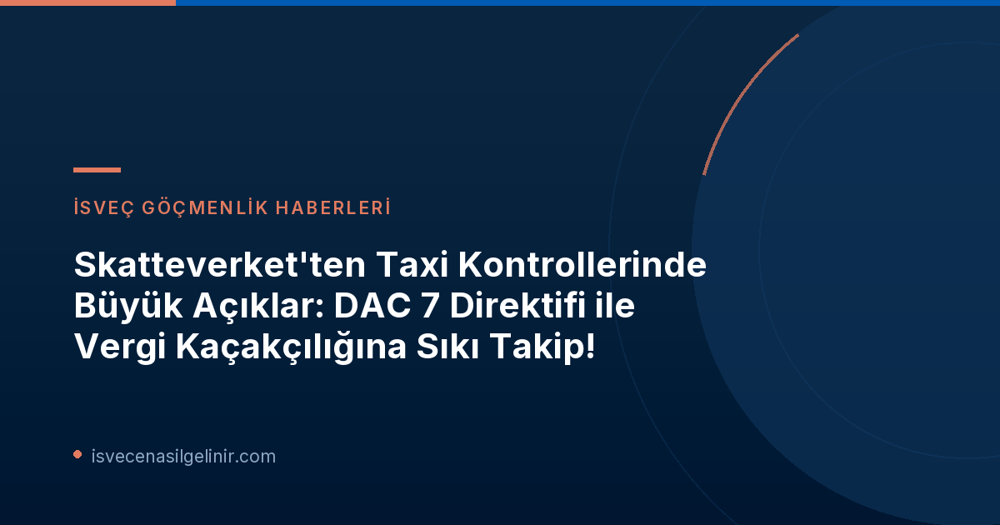

İsveç'te vergi kaçakçılığıyla mücadele, özellikle dijital platformlar üzerinden verilen hizmetlerde giderek daha da sıkılaşıyor. İsveç Vergi Dairesi (Skatteverket) tarafından yakın zamanda yapılan kapsamlı taksi kontrolleri, sektördeki birçok eksikliği ve vergi kaçakçılığı riskini gün yüzüne çıkardı. AB içindeki geliştirilmiş otomatik bilgi paylaşım mekanizmaları, özellikle DAC 7 direktifi sayesinde, bu platform şirketlerinin vergi kaçırmasını zorlaştırıyor. Bu rehberde, Skatteverket'in denetim sonuçlarını, tespit edilen yaygın sorunları ve sektördeki taksiciler ile platform şirketleri için önemli uyarıları detaylı bir şekilde inceleyeceğiz. Ayrıca, İsveç'teki yasalara uyumun önemine dikkat çekerek, İsveç Vatandaşlık Sınavı gibi konularda da bilgiye erişimin önemini vurgulayacağız.
Skatteverket'in Kapsamlı Taksi Kontrolü Neleri Ortaya Çıkardı?
İsveç Vergi Dairesi (Skatteverket), özellikle uygulama tabanlı taksi şirketlerini mercek altına alarak kapsamlı denetimler gerçekleştirdi. Bu denetimlerin temel amacı, platform ekonomisinde faaliyet gösteren taksicilerin ve şirketlerin vergi yükümlülüklerinden kaçınamayacağını açıkça göstermekti. Skatteverket'in taksi kontrollerinden sorumlu Christina Ahlström'ün belirttiği gibi: "Kontrolün amacı, platformlar üzerinden taksicilik yapmanın vergisiz bir bölge olmadığını göstermektir. Skatteverket, AB içindeki bilgi değişimi sayesinde bu şirketleri tespit edebiliyor."
Tespit Edilen Başlıca Eksiklikler ve Vergi Riskleri
Skatteverket'in yaptığı incelemeler sonucunda taksi sektöründe birçok önemli eksiklik ve vergi riski tespit edildi:
- Gelir ve Maaş Kontrolleri: Başlatılan yaklaşık 70 soruşturmanın büyük bir kısmı gelir ve maaş kontrolüne odaklandı. Şirketlerin, temsilcilerin ve hatta bazı çalışanların ve alt yüklenicilerin banka hesapları detaylı olarak incelendi.
- Taksametre Kayıtlarındaki Sorunlar: Tekrarlayan sorunlardan biri, tüm taksi yolculuklarının taksametrelere kaydedilmemiş olmasıydı. Bu durum, hem gelirlerin hem de maaşların kontrolünü ciddi şekilde zorlaştırıyor ve muhasebe merkezlerinin kontrol aracı olarak değerini zayıflatıyor. Skatteverket, bu tür eksiklikleri düzenli olarak Transportstyrelsen'e (İsveç Ulaştırma Ajansı) bildiriyor. Bu bildirimler, uyarıya veya trafik izninin iptaline kadar varan sonuçlar doğurabilir.
- KDV (Moms) Hataları: Platformların komisyonları üzerinden KDV'nin yanlış işlenmesi, önemli vergi risklerinden biri olarak belirlendi.
- Bonus ve Garantilerin Yanlış Beyanı: Şirketlerin sunduğu bonus ve garanti ödemelerinin muhasebeleştirilmesinde de eksiklikler olduğu görüldü.
DAC 7 Direktifi: Vergi Kaçakçılığıyla Mücadelede Yeni Bir Dönem
İsveç Vergi Dairesi'nin bu denetimlerdeki başarısının arkasında, Avrupa Birliği genelinde uygulanan DAC 7 direktifi yatıyor. Bu direktif, dijital platform operatörleri için raporlama yükümlülüğü getirerek uluslararası otomatik bilgi değişimini sağlıyor ve Skatteverket'e vergi denetimi için güçlü bir zemin sunuyor.
DAC 7 Direktifi ve Platform Şirketleri İçin Önemli Bilgiler
DAC 7 Direktifi, Avrupa Birliği üye ülkeleri arasında dijital platformlar aracılığıyla elde edilen gelirler hakkında otomatik bilgi paylaşımını zorunlu kılan bir düzenlemedir. Bu direktif, platform operatörlerinin taksi hizmeti gibi belirli hizmetleri aracılık ettikleri serbest çalışan taksi şirketleri hakkındaki bilgileri raporlamasını gerektirir. Elde edilen veriler hem uluslararası otomatik bilgi değişimi için hem de İsveç Vergi Dairesi (Skatteverket) tarafından vergi denetimi amacıyla kullanılır. Bu sayede, platform ekonomisinde faaliyet gösterenlerin vergi yükümlülüklerini doğru bir şekilde yerine getirmesi hedeflenir ve vergi kaçakçılığıyla mücadelede önemli bir araç haline gelir.
İsveç vatandaşlığı veya göçmenlik süreçleri hakkında daha fazla bilgi edinmek için sverigemedborgarskapsprov.com adresini ziyaret edebilirsiniz.
Farklılıklar ve Tespitler: Milyonlarca Kronluk Gelir Farkları
Christina Ahlström'ün açıklamalarına göre, birçok şirket DAC 7 verilerinin gösterdiğinden "önemli ölçüde daha düşük ciro" bildirdi. Bazı durumlarda bu farklar "birkaç milyon krona" ulaşıyordu. Bu durum, otomatik bilgi değişiminin vergi kaçakçılığını tespit etmede ne kadar etkili olduğunu açıkça ortaya koyuyor.
Skatteverket'in Soruşturma Süreci ve Sonuçları
Skatteverket, kontrol kapsamında yaklaşık 70 soruşturma başlattı ve bu vakaların yaklaşık yarısı bugüne kadar sonuçlandırıldı. İlk sonuçlar oldukça dikkat çekici:
| Kategori | Miktar/Açıklama |
|---|---|
| Başlatılan Soruşturma Sayısı | Yaklaşık 70 |
| Sonuçlanan Vaka Sayısı | Yaklaşık yarısı (%50) |
| Ek Vergi ve Harç Değişiklikleri | Yaklaşık 8 milyon SEK |
| Diğer Yaptırımlar | Suç duyuruları, Transportstyrelsen ve yardım ödemesi yapan kuruluşlara bildirimler |
Bu soruşturmalar sadece ek vergi ve harç tahsilatıyla kalmadı, aynı zamanda suç duyurularına ve Transportstyrelsen ile diğer ilgili kurumları bilgilendirmelere de yol açtı. Skatteverket, kontrol edilecek şirketleri belirlerken hata ve hile riskinin yüksek olduğu durumlara odaklanarak bir risk değerlendirmesi yapıyor.
Taksi Sektöründe Şeffaflık ve Yasal Uyumun Önemi
Bu kontroller, İsveç'teki taksi sektörü için önemli bir uyarı niteliği taşıyor. Hem platform şirketleri hem de bireysel taksiciler için yasalara tam uyumun ve şeffaf bir muhasebe sisteminin ne kadar kritik olduğu bir kez daha kanıtlandı. Eksiksiz kayıt tutmak, tüm gelirleri doğru beyan etmek ve KDV gibi vergi yükümlülüklerini eksiksiz yerine getirmek, yalnızca yasal yaptırımlardan kaçınmakla kalmayıp, sektördeki güvenilirliği de artıracaktır.
Kimler Kontrol Ediliyor?
Skatteverket'in denetimleri sadece taksi şirketlerini değil, aynı zamanda bu şirketlerin sahiplerini, onlarla ilişkili diğer şirketleri ve çalışanlarını da kapsıyor. Bu geniş kapsamlı yaklaşım, vergi kaçakçılığı zincirinin tüm halkalarını hedef almayı amaçlıyor.
Sıkça Sorulan Sorular
Skatteverket neden taksi sektörünü hedef alıyor?
Taksi sektörü, dijital platformların yükselişiyle birlikte karmaşık gelir yapılarına sahip olabilen ve nakit akışının yoğun olduğu bir alan olması nedeniyle vergi kaçakçılığı riski taşıyan sektörlerden biridir. DAC 7 direktifi ile birlikte artan uluslararası bilgi değişimi, bu alandaki kontrol mekanizmalarını güçlendirmiştir.
DAC 7 direktifi sadece taksi şirketlerini mi etkiliyor?
Hayır, DAC 7 direktifi sadece taksi şirketlerini değil, dijital platformlar üzerinden mal veya hizmet satan tüm satıcıları ve bu satışlara aracılık eden platform operatörlerini etkilemektedir. Taksi sektörü, Skatteverket'in ilk odaklandığı alanlardan biridir.
Vergi kaçakçılığı tespit edilirse ne gibi cezalar uygulanır?
Vergi kaçakçılığı tespit edildiğinde, eksik ödenen vergi ve harçlara ek olarak faiz ve vergi cezaları uygulanabilir. Ciddi durumlarda ise suç duyurusunda bulunulabilir ve bu durum hapis cezasına kadar varan sonuçlar doğurabilir. Ayrıca, Transportstyrelsen tarafından trafik izinlerinin iptali gibi idari yaptırımlar da söz konusu olabilir.
Referanslar
- Skatteverket – Taxikontroll visar på många brister
- sverigemedborgarskapsprov.com
İsveç'te Vergi Uyumunuzu Sağlayın!
İsveç'teki vergi yükümlülükleriniz, platform ekonomisindeki işleyiş ve yasalara uyum hakkında daha fazla bilgi almak için uzman danışmanlarımızla iletişime geçin. Hukuki risklerden kaçınmak ve işinizi sorunsuz yürütmek için profesyonel destek alın.